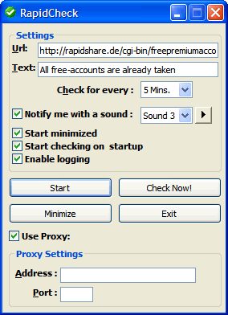

RapidCheck™ v0.5
RapidCheck is a tool that checks whether any free accounts are available at rapidshare.de. It stays at system tray area and checks for free acounts at speciefied intervals. When free acounts detected, you will be notified by the program with an information baloon tooltip. Then you can directly go to free account registration page by clicking the tooltip.
Screenshots

Download
Clik here to download RapidCheck installer. Or click here to download just the executable and notification sound files. Program should work on Microsoft Windows XP SP1 (or later), Windows 2000 SP3 (or later) and Windows 2003. (Executable works on systems which MSXML 4.0 library and Visual Basic 6.0 runtimes are already installed)
Version History
- v0.1 - Initial Release
- v0.1.1
-
- Degraded from MSXML 5 to MSXML 4
- Added a few info dialogs
- v0.2
-
- Added sound notification (6 different sounds)
- Balloon tooltip now shows the time when free accounts were available
- v0.3
-
- Started using WinHttpRequest instead of XMLHttpRequest
- Added Proxy support
- Added play button for testing sounds
- Added Windows XP Look & Feel
- Added some error control
- v0.4
-
- Settings are saved.
- Added logging capability
- Added 'Start Minimized' option
- RapidCheck now starts on startup of Windows
- Visual bug that occurs on some XP themes is fixed
- v0.5
-
- Changed the default free account page URL and search text
- Now you can enter the free account page and the text to search on that page
Bookmark
About
Copyright © 2006 Inspire Tech. •